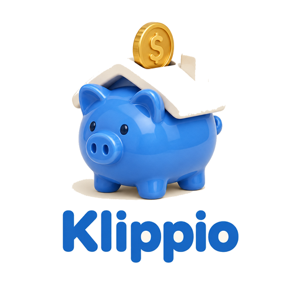

Convidar para o Klippio Fin
Compartilhe o app com quem precisa organizar as contas. O convite vai com o link pronto para instalar.
Quem receber abre o link, toca nos três pontinhos do Chrome e escolhe "Instalar aplicativo". Em poucos segundos o app fica na tela inicial.